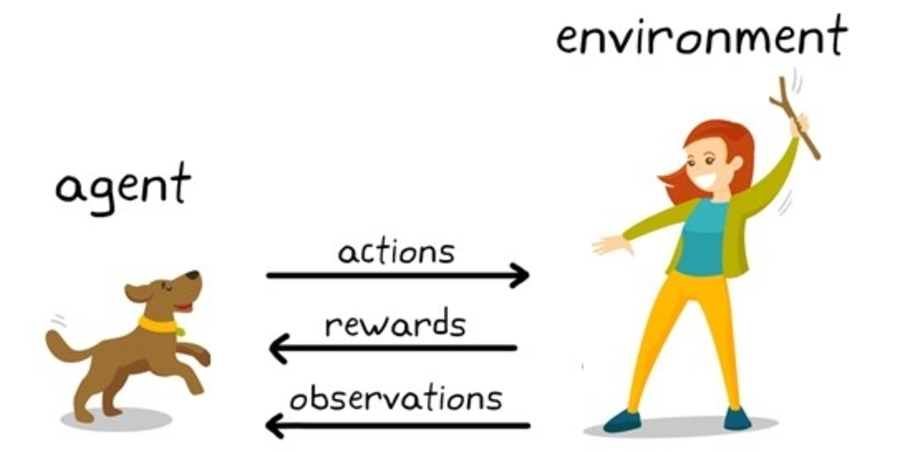
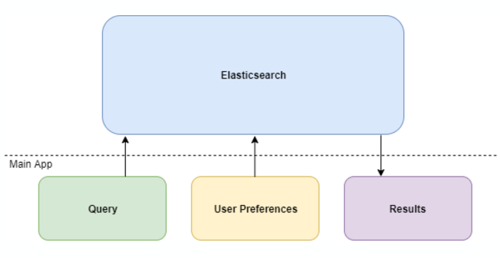
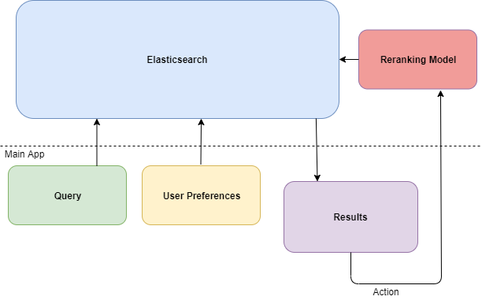
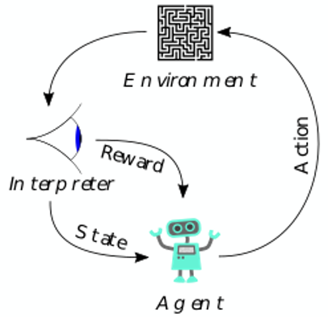

Machine learning for prediction of customers' behaviour: Search Results Ranking for Search Engines
This is the ongoing project at current work and in the same time future Master thesis at University of Bonn. Below you can find overview over general concept for the project.

Project: Machine learning for prediction of customers' behaviour: Search Results Ranking for Search Engines
What I will learn or improve in my knowledge:
Search Engine Architecture, Search Results Ranking methods, Reinforcement Learning, ELK Stack, Machine Learning in general
How Machine Learning is used by the Search Engines ?
Machine Learning for Search Engine:
- Detecting the pattern
- Specific queries and custom signals
- New signals identification
- Improving targeting and ad quality
- Identifying the similarities
- Better understanding of images – image search option

Typical search engines
Typical search engines indexes documents, which are for example job postings. The documents are stored in an inverted index, which allows for quick, full-text search. An inverted index maps all the unique tokens in a document to a list of the documents in which they each appear. Place of storing indexed documents can be Elasticsearch. Many times Search Engines uses things which are available and related to users, for example user who logged into the platform had to select preferred industries, location, etc. Thanks to knowledge of users’ action we can every time improve our results ranking using Machine Learning. Results ranking with ML used could be much more flexible and sensitive to seasonalities.
Reinforcement Learning
For improving search engines result ranking I can use e.g. Reinforcement Learning.The typical framing of a RL scenario:
- A reinforcement learning agent interacts with its environment in discrete time steps.
- At each time, the agent receives an observation, which typically includes the reward.
- It then chooses an action from the set of available actions, which is subsequently sent to the environment.

Advantages of Machine Learning for the company
Researchers used Russian search engine Yandex to analyze results for different queries. They found that the types of results displayed depended largely on the query category or phrasing.- This means that machine learning can place more weights on variables more or less heavily in certain queries over others.
- Overall, it was found that personalized searches customized by machine learning increased the click-through rate (CTR) of results about 10 percent.
- As the user entered more queries into Yandex, it was found that the CTR continued to increase.